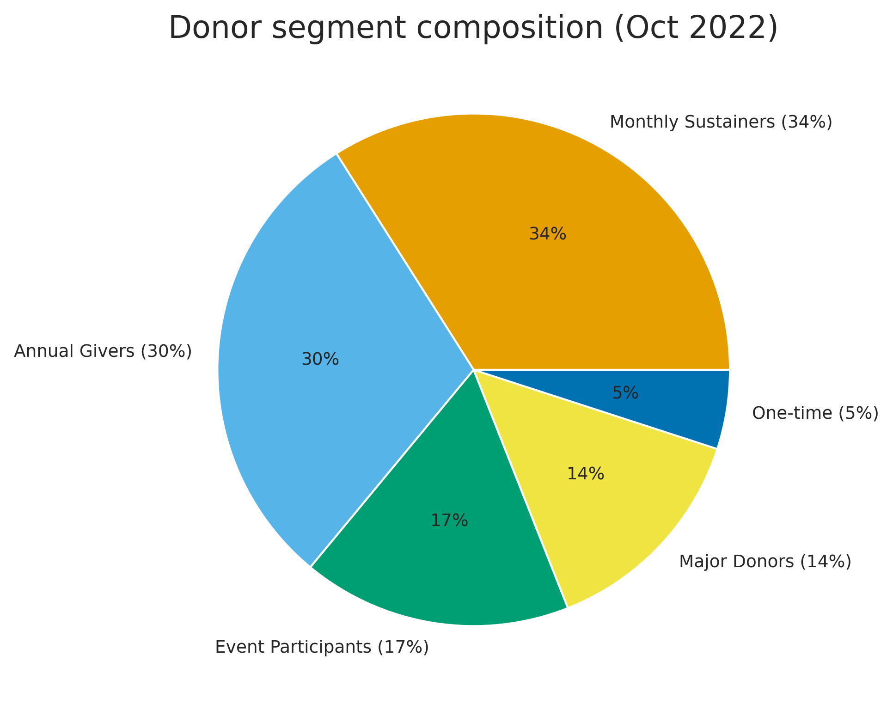
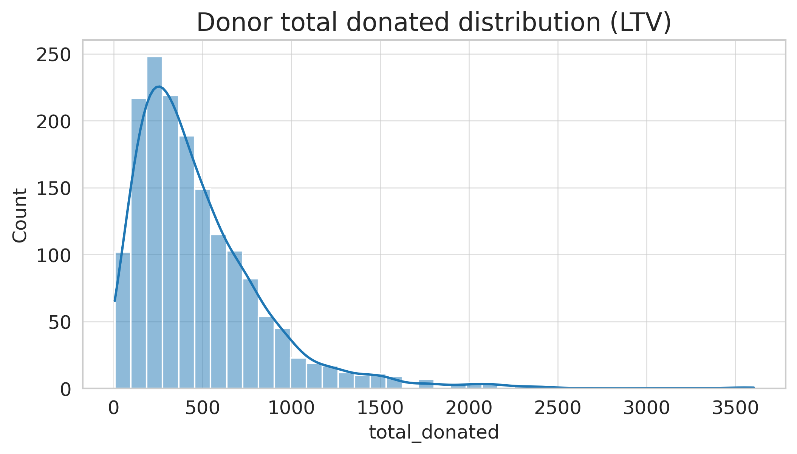

Donor Intelligence System — dashboard
Donor retention rate & avg donation
Donor segment composition

Donor LTV distribution

Donors by donation count
To view live: enable GitHub Pages under Settings → Pages → main branch / (root).